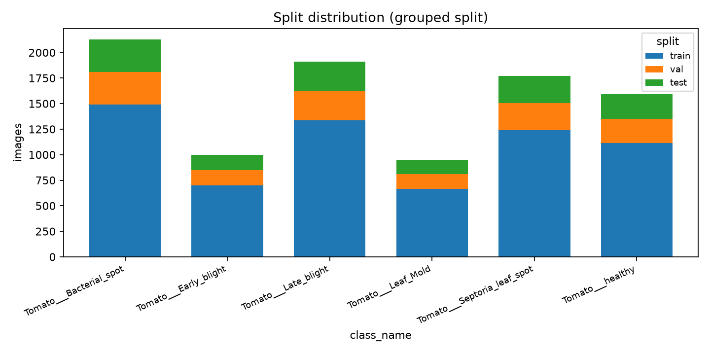
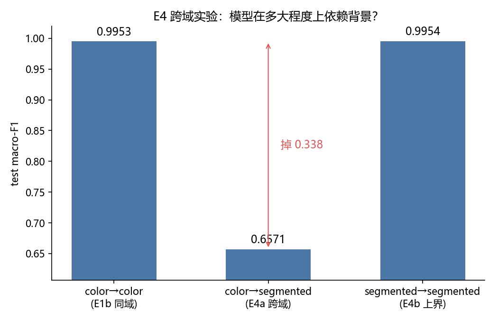
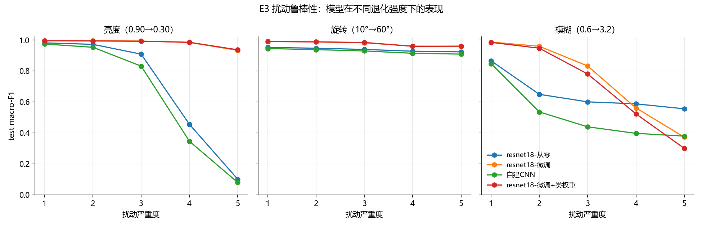
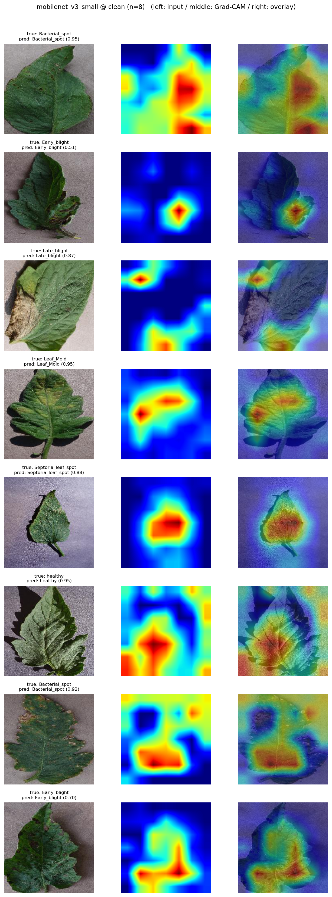
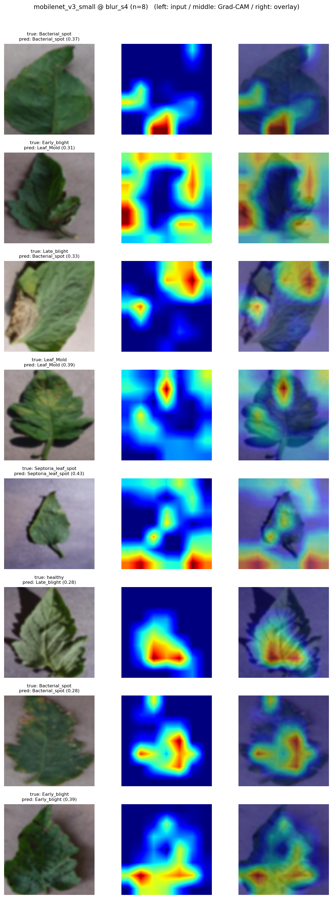

课程项目 · 计算机视觉
数据划分防泄漏 · 多因素消融 · 背景依赖分析
PlantVillage · 6 类 · 9350 张 · 2026
Agenda
9350 张、pHash 去重、按组分层划分、为什么用 macro-F1
预训练 / 模型规模 / 类别加权的六组对照
三类扰动曲线 + Grad-CAM 热力图
跨域掉 34 个点：模型严重依赖背景
01 · 数据与评测设计
同一片叶子会被拍多张，若按图片随机划分，近重复图会同时落进训练集和测试集，指标虚高。 因此先用 pHash（汉明距离 ≤ 8）聚类，9350 张聚成 8847 组，按组做 70/15/15 分层划分。
划分文件用 sha256 冻结，类别不均衡 2.2 倍，所以主指标用 macro-F1，而不是准确率。

图 1 六类样本分布：952（Leaf Mold）到 2127（Bacterial Spot）
02
六组对照 · 三类扰动 · 一次跨域
02 · 主结果
| 配置 | 模型 | 预训练 | 参数量 | test macro-F1 | 结论 |
|---|---|---|---|---|---|
| E0 冻结主干 | ResNet18 | ✓ | 11.18M | 0.8907 | 只训 head 不够 |
| E1a 从零训练 | ResNet18 | ✗ | 11.18M | 0.9807 | 数据量够，但不如预训练 |
| E1b 全量微调 | ResNet18 | ✓ | 11.18M | 0.9953 | 最优基线 |
| E1c 自建 CNN | CNN | ✗ | 1.17M | 0.9745 | 轻量可用 |
| E1d 类别加权 | ResNet18 | ✓ | 11.18M | 0.9950 | 不均衡已不构成瓶颈 |
| E1e MobileNetV3 | MobileNetV3-S | ✓ | 1.52M | 0.9958 | 1/7 参数，精度更高 |
| E2 增强消融 | ResNet18 | ✓ | 11.18M | 待补 | 四组配置已就绪，正在跑 |
验证集用于选模型与调参，测试集仅在最终评测时使用；每格为 val / test 中的 test 一行。
02 · 核心发现（E4）

图 2 训练 / 测试域组合对比（test macro-F1）
03 · 鲁棒性（E3）

图 3 4 个模型 × 3 类扰动 × 5 个强度（共 60 组）
旋转：5 级仍有 0.95+，叶片近似各向同性，模型几乎不变性。
模糊：最脆弱。ResNet18 预训练在 5 级掉到 0.37。
亮度：预训练模型 5 级仍有 0.93，自建 CNN 直接崩到 0.08。
→ 预训练权重不仅提精度，也显著提鲁棒性。
03 · 可解释性

干净输入：注意力集中在病斑区域

模糊（severity 4）：注意力扩散、失焦
注意力分布与 E3 的掉点一致：模糊破坏纹理 → 热区扩散 → 判别失效。
04 · 结论
① 数据侧：pHash 按组去重后，99.5% 仍成立，结论不是靠泄漏得来的。
② 训练侧：预训练权重贡献最大（+1.5 点），模型规模影响很小。
③ 可信度侧：模型严重依赖背景，跨域掉 34 点，真实场景需重新评估。
① 仅单一种子（seed 42），未做多种子置信区间。
② 仅番茄 6 类，未验证跨作物泛化。
后续：多种子重复 + 背景增广（随机换背景）来降低背景依赖。
全部代码、冻结划分、结果表与作图脚本开源：github.com/a-ying-w/rgzn
请老师批评指正